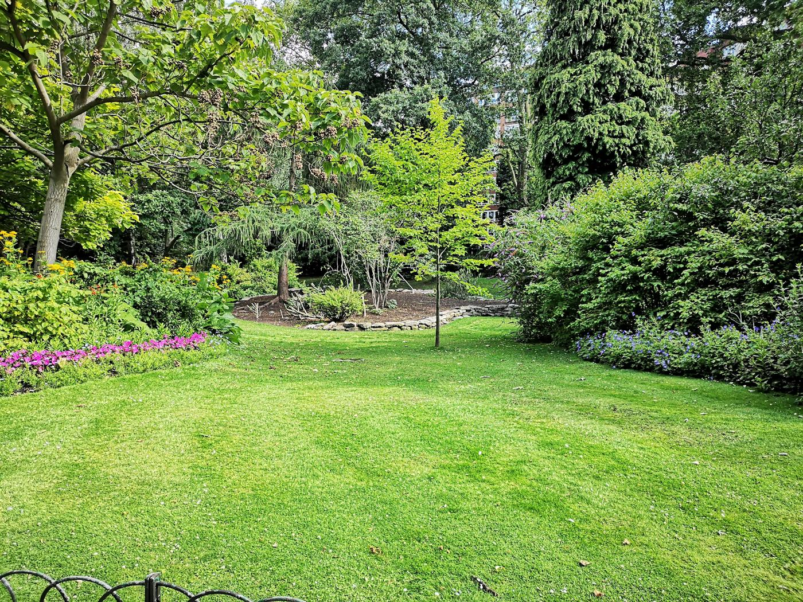
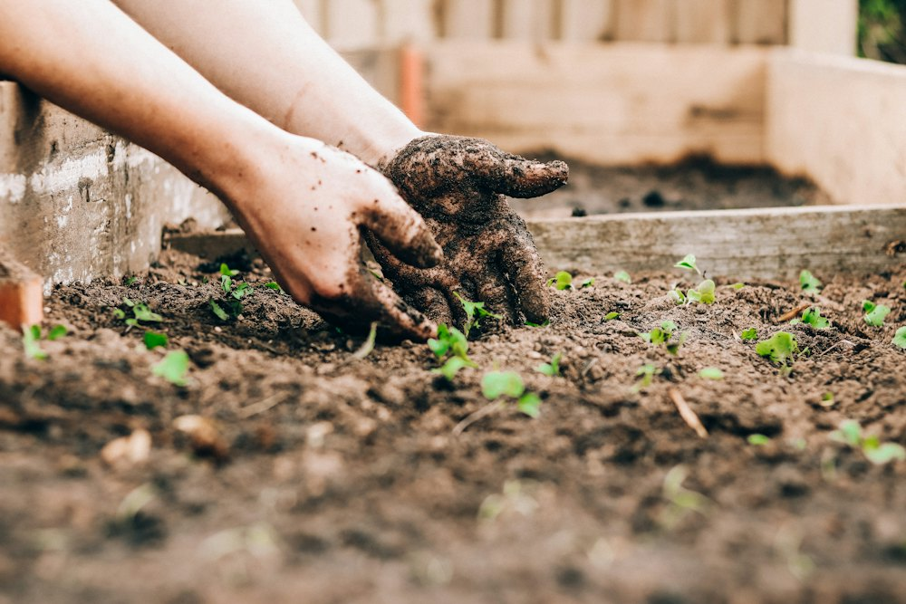
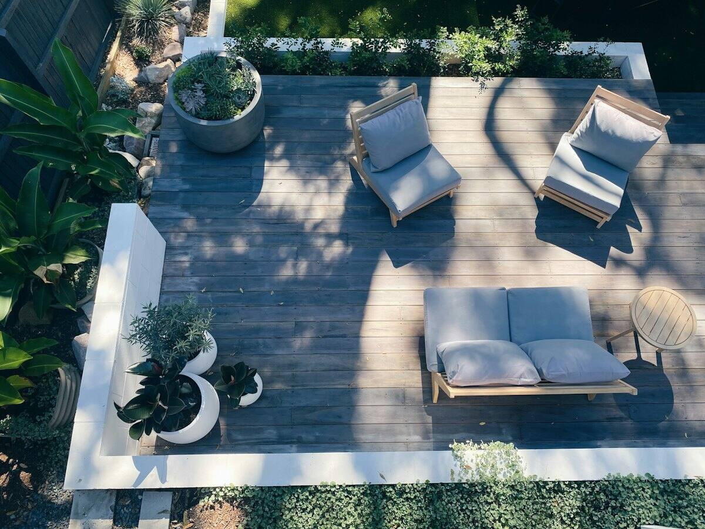
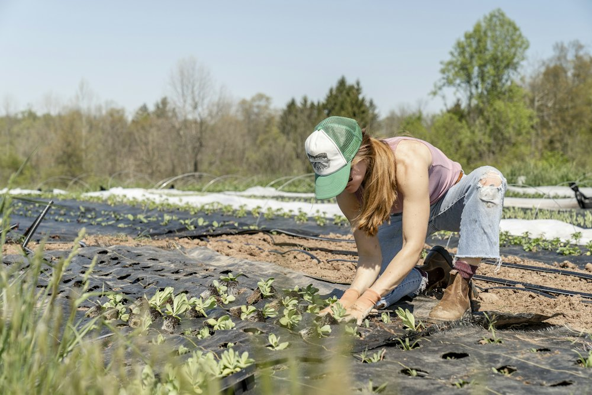
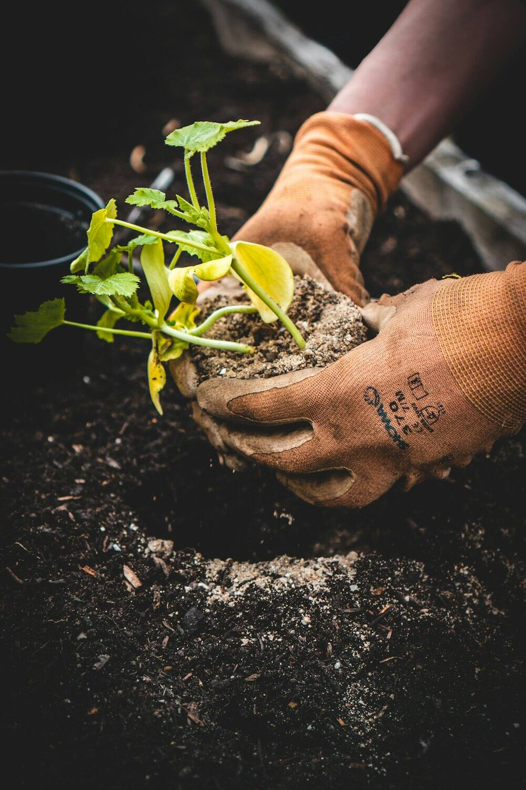

01
Manutenção de gramado
Corte semanal ou quinzenal, acabamento de bordas, aparo e limpeza com soprador, além de adubação sazonal para um verde denso e uniforme.
Cuidado de gramados e jardins, empresa familiar atendendo a Grande Orlando desde 2012.
Manutenção semanal de gramado, grama nova, canteiros limpos e reformas completas de quintal, tudo feito por uma única equipe de confiança para você ter seus fins de semana de volta.

Quintal em Winter Park, antes da temporada de corte. Grama nova, bordas aparadas e plantio em 3 dias.
0+
quintais transformados nos condados de Orange e Seminole
De um corte semanal rápido a uma reforma completa do quintal: nós planejamos, executamos e mantemos tudo bonito.
Corte semanal ou quinzenal, acabamento de bordas, aparo e limpeza com soprador, além de adubação sazonal para um verde denso e uniforme.
Poda, capina, cobertura com mulch e avaliação da saúde das plantas para manter seu jardim impecável o ano todo.

03Preparo do solo, nivelamento e grama em placas ou sementes aplicadas do jeito certo, para a grama nova enraizar rápido.

04Redesenhamos quintais cansados e os transformamos em espaços que você realmente usa, com gramado novo, bordas, canteiros e projeto de plantio.
Bordas limpas, mulch novo e rotação sazonal de flores para canteiros que chamam atenção de quem passa na rua.

06Canteiros sob medida para o sol, o solo e o estilo da sua casa: modelados, delimitados, plantados e prontos para crescer.
Não sabe do que seu quintal precisa?
Visitamos seu imóvel, dizemos com sinceridade o que vale a pena fazer e enviamos um orçamento claro e fechado em até 24 horas.
A Blessed começou em 2012 com uma caminhonete, um cortador de grama e a promessa de tratar cada quintal como se fosse nosso. Daniel e Maria Reyes construíram o negócio rua por rua, principalmente com a indicação de vizinho para vizinho.
Hoje somos uma equipe de 24 pessoas, mas a promessa continua a mesma: chegar quando combinamos, fazer o trabalho certo da primeira vez e deixar cada imóvel mais limpo do que encontramos.

Daniel & Maria Reyes Fundadores
Por que os clientes continuam com a gente, ano após ano
Cada membro da equipe é treinado, tem antecedentes verificados e está coberto por seguro. Seu imóvel fica protegido.
Pessoas que conhecem seu quintal, o código do seu portão e como você gosta das bordas.
Um orçamento claro antes de começar. Sem taxas surpresa e sem contratos longos.
Adubos e tratamentos ecológicos, seguros para as pessoas e os animais que aproveitam seu gramado.
Não ficou satisfeito com uma visita? Avise em até 48 horas e voltamos para corrigir, sem custo.
Alguns projetos recentes pela região de Orlando. Toque em qualquer foto para ver de perto.
Nosso gramado tinha mais mato do que grama. Seis semanas depois que a Blessed colocou grama nova e começou a manutenção semanal, os vizinhos passaram a perguntar quem tínhamos contratado.
Os mesmos dois rapazes toda terça, sempre pontuais, portão sempre fechado depois que saem. Não encosto num cortador de grama há dois anos e não sinto a menor falta.
Transformaram um canto lamacento do nosso quintal em canteiros elevados de hortaliças que as crianças adoram. Orçamento claro, sem surpresas, pronto em dois dias.
Passamos as áreas comuns do nosso condomínio para a Blessed na primavera passada. Menos reclamações, fachada mais bonita e uma equipe que realmente atende o telefone.
A reforma do quintal valeu cada centavo: canteiros novos, gramado renovado, bordas limpas. Agora é onde passamos todas as noites.
4,9/5
Média de mais de 320 avaliações verificadas no Google
Envie uma mensagem agora. Respondemos em até uma hora no horário comercial com um horário para seu orçamento grátis no local.
Mais de 1.200 quintais confiam em nós. Sem contrato, cancele quando quiser.